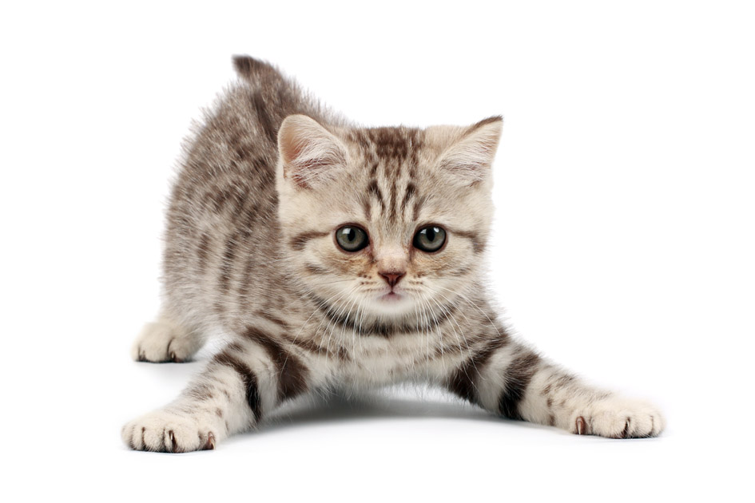

Πρώτη Μέρα στο Σπίτι με το Κουτάβι σας
- Ετοιμάστε έναν ήσυχο, ζεστό χώρο όπου θα νιώθει ασφάλεια.
- Δώστε του χρόνο να εξερευνήσει το σπίτι χωρίς πίεση.
- Φροντίστε να έχει πάντα φρέσκο νερό και το γεύμα που έχει συνηθίσει.
- Περιορίστε την πρόσβαση σε επικίνδυνα σημεία (σκάλες, καλώδια κ.λπ.).
- Κρατήστε ήρεμη στάση και μιλήστε του με γλυκό τόνο για να χτίσετε εμπιστοσύνη.
- Ξεκινήστε από την πρώτη μέρα μια απλή ρουτίνα (φαγητό, βόλτα, ύπνος).
Tips Φροντίδας νεογέννητων γατιών

- Διατηρήστε τα ζεστά γιατί τα νεογέννητα δεν μπορούν να ρυθμίσουν τη
θερμοκρασία τους.
- Αν δεν υπάρχει μητέρα, χρησιμοποιήστε ειδικό γάλα για γατάκια (όχι αγελαδινό).
- Ταΐζετε μικρές ποσότητες συχνά, σύμφωνα με την ηλικία τους.
- Βοηθήστε τα με απαλό καθάρισμα μετά το τάισμα για την υγιεινή τους.
- Συμβουλευτείτε κτηνίατρο για έλεγχο και σωστή καθοδήγηση από τις πρώτες ημέρες.
- Δημιουργήστε μια ήσυχη, καθαρή και προστατευμένη φωλίτσα, μακριά από ρεύματα αέρα.
- Ζυγίζετε τα καθημερινά για να βεβαιωθείτε ότι παίρνουν σταθερά βάρος.
- Χειριστείτε τα απαλά και μόνο όταν είναι απαραίτητο τις πρώτες ημέρες.
- Παρατηρείτε για σημάδια αδυναμίας, συνεχές κλάμα ή μειωμένη όρεξη.
- Φροντίστε η μητέρα (αν υπάρχει) να έχει ποιοτική τροφή και ήρεμο περιβάλλον.